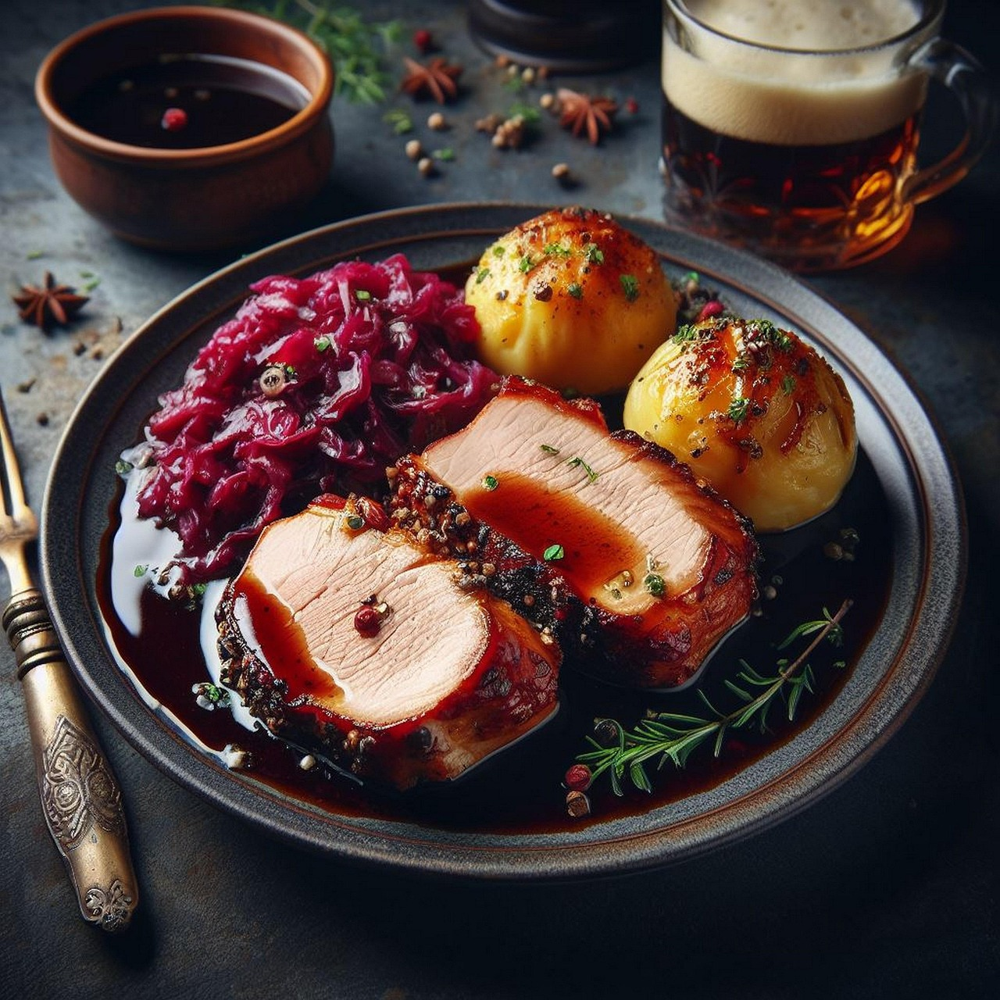

Rinderroulade mit Rotkohl & Kartoffelklößen
30 Min.
normal
04.12.2025
| 2 | Roulade(n) vom Rind |
| 1 | Pkg. Speck gewürfelt |
| 3 | Zwiebel(n) |
| 1 | Karotte(n) |
| 1 | Glas Rotkohl |
| 1 | Pkt. Kloßteig |
| – | Salz und Pfeffer |
| 1 | Becher Sahne |
Zubereitung
ca. 30 Min.
Gesamtzeit ca. 30 Min.
- Rouladen von einer Seite mit Senf bestreichen, salzen und pfeffern.
- 2 Zwiebeln in Würfel schneiden und jeweils ein Häufchen auf die Rouladen legen, sowie eine Handvoll gewürfelten Speck. Nun muss die Roulade nur noch gerollt und mit Zahnstochern befestigt werden.
- Rouladen in eine Auflaufform legen, 1 Zwiebel mit Schale schneiden, eine Karotte putzen und in Stücke schneiden. Beides in die Auflaufform geben und Wasser hinzufügen. Deckel auf die Auflaufform geben und bei 180 Grad Umluft für zwei Stunden in den Backofen stellen. Die letzte halbe Stunde den Deckel abnehmen. Zum Schluss die Soße abgießen, aufkochen und Sahne hinzugeben.
- Blaukraut in einen Topf geben, mit Essig und Zucker abschmecken und 15 Minuten köcheln lassen.
- Kartoffelklöße rollen und für 20 Minuten ins kochende Wasser geben. Vorsicht: Wasser darf während dieser Zeit nicht mehr kochen.